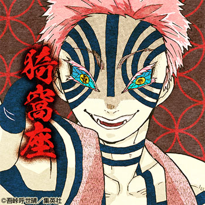

登場人物
竈門 炭治郎(かまどたんじろう)
本作の主人公。家族思いで優しい心を持つ少年。
ある日、村で炭を売っているときに鬼に家族を殺され、妹の禰豆子は鬼にされてしまった。
鬼になった禰豆子を人間に戻すこと、家族を殺して妹を鬼にした鬼の鬼舞辻無惨を倒すため、鬼殺隊へ入隊する。
竈門 禰豆子(かまど ねずこ)
炭治郎の妹。鬼舞辻無惨によって家族を惨殺され、無惨の血が体内に入り鬼になってしまった。
家族思いで、自分の着物を買うよりも下の子たちにご飯を食べさせてほしいという優しい性格。
鬼になってからは人間を食べたことは一度もなく、眠って体力を回復。
鬼にとしての能力は高いが、兄の炭治郎を守るための血鬼術「爆血(ばっけつ)」を会得している。
我妻 善逸(あがつま ぜんいつ)
炭治郎と同期の鬼殺隊士。気弱だが、やる時はやる性格。桑島慈悟郎の弟子となり、修行して鬼殺隊へ。
「雷の呼吸」の使い手だが、壱の型「霹靂一閃」しか使えないうえ、寝てるときしか発動できない。しかしその速さは上弦の鬼にも匹敵するほど。
嘴平 伊之助(はしびら いのすけ)
炭治郎と同期の鬼殺隊士。常に猪の皮を頭にかぶっており、素顔は美形。
「獣の呼吸」という我流で生み出した呼吸の使い手で、攻撃の型は「牙」と呼んでいる。
自分勝手な行動が多かったが、炭治郎たちと行動を共にしていく中で仲間意識が芽生えてきた。
栗花落 カナヲ(つゆり かなお)
炭治郎と同期の鬼殺隊士。幼き頃に両親から虐待され孤児になったところを、胡蝶しのぶたちに引き取られた過去がある。
鬼殺隊の柱
富岡 義勇(とみおか ぎゆう)
炭治郎の兄弟子であり、鬼殺隊士の「柱」のひとり。「水の呼吸」の使い手で、炭治郎が鬼殺隊に入るきっかけを作った人物。
鬼になった禰豆子が炭治郎を襲っている現場に遭遇し、助けようとするが炭治郎に阻まれ、また禰豆子が炭治郎を庇う姿を見て二人を鱗滝左近次のところに向かわせた。
冷静に戦況を見定め、堅実に任務をこなす寡黙な剣士だが、人間味あふれる部分もある。
煉獄 杏寿郎(れんごく きょうじゅろう)
鬼殺隊士の「柱」のひとりで「炎の呼吸」の使い手。煉獄家は代々「炎の呼吸」を伝承している。
幼い頃は、元・柱である父の煉獄槇寿郎から指導を受けていたが、突如、父が剣士を辞める。
その後は、三冊の指南書を熟読し、自力で「炎の呼吸」を極めて炎柱となった。
宇髄 天元(うずい てんげん)
鬼殺隊士の「柱」のひとりで「雷の呼吸」から派生した「音の呼吸」の使い手。
鬼殺隊士になる前は忍びとして過酷な環境に身を置いていた反動からか、日常に派手なものを求めるようになった。
その結果、宝石が散りばめられた額当てや鎖で繋がれた刀を二本背負うなど、いつもド派手な格好をしている。
胡蝶 しのぶ(こちょう しのぶ)
鬼殺隊士の「柱」のひとりであり、女性の隊士で「虫の呼吸」の使い手。
蝶の羽根のような髪飾りを付けた、小柄の女性の隊士。隊士では珍しく藤の花の毒を使って鬼と戦う。
薬学にも精通しており、自身の屋敷「蝶屋敷」で傷を負った隊士たちの治療などを行う。
甘露寺 蜜璃(かんろじ みつり)
鬼殺隊士の「柱」のひとりで、「恋の呼吸」の使い手。
少女漫画に出てくるような大きな目にピンクと緑色の髪が特徴。「恋の呼吸」の使い手らしく惚れっぽい性格であり、男女問わずキュンキュンしていることが多い。
伊黒 小芭内(いぐろ おばない)

鬼殺隊士の「柱」のひとりで、「蛇の呼吸」の使い手。
常に口元を包帯で隠し、左右で目の色が異なるのが特徴。「鏑丸(かぶらまる)」という名の白い蛇を連れている。
「蛇の呼吸」の使い手であることから、剣の太刀筋が木刀であっても曲がって見えるほど。
不死川 実弥(しなずがわ さねみ)
鬼殺隊士の「柱」のひとりで、「風の呼吸」の使い手。不死川 玄弥の兄。
見た目は銀髪で全身傷だらけ、鬼だけでなく仲間にも交戦的。
時透 無一郎(ときとう むいちろう)
鬼殺隊士の「柱」のひとりで、刀を握って二ヶ月という短い期間で「柱」となった天才剣士。「霞の呼吸」の使い手でありながら、始まりの呼吸である「日の呼吸」の使い手の子孫でもある。
普段から無表情で他人に関心がないが、鬼殺隊に入隊する前に記憶を無くしていた。
姫鳴嶼 行冥(ひめじま ぎょうめい)
鬼殺隊士の「柱」のひとりで、「岩の呼吸」の使い手。
身長2メートルを超える盲目の巨漢で、僧侶のような格好をしているのが特徴。大きな斧に鎖で繋がれた鉄球を武器としている。
「鬼殺隊士最強」の柱。
敵キャラ(上弦の鬼)
| 名前 | 階級 | 特徴 |
|---|---|---|
| 鬼舞辻無惨 | 鬼の始祖 | いろいろな人間に姿を変えることができる。また、全ての鬼の始まりが無惨である。再生能力が異常に速く、肉体を分裂させてからの蘇生が可能である。 |
| 黒死牟 | 上弦の壱 | もともと剣士だったこともあり、血鬼術だけでなく全集中の呼吸も使うことができる。 |
| 童磨 | 上弦の弐 | 氷を操る血鬼術を扱う。かなり広い範囲に攻撃できたり、相手の目を潰すほどの冷気を出せたり、吸い込むだけで肺を壊死させる氷を散布させたりする。 |
| 猗窩座 | 上弦の参 | 血鬼術は破壊殺という武術技を繰り出すというシンプルなものになっているが、羅針という相手の闘気を探知して動きを先読みできる技も扱う。 |
| 半天狗 | 上弦の肆 | 老人で弱々しい姿をした鬼だが、頚を斬り落とされる度に若くて強い分身体を生み出す血鬼術を扱う。最大4体の分身体を生み出す。 |
| 玉壺 | 上弦の伍 | 壺から上半身が出た異形な姿をした鬼。壺は異空間になっており、壺から壺に瞬間移動したり、壺から化け物を出したりすることができる。 |
| 堕姫&妓夫太郎 | 上弦の陸 | 上弦の陸は堕姫と妓夫太郎の兄妹の2体で務めている。兄の妓夫太郎は普段堕姫の中に潜んでいるが、堕姫では手に負えない相手の時は妓夫太郎も戦いに加わる。妓夫太郎のほうが圧倒的に強い。また、2体同時に頚を斬り落とさなければならない。 |